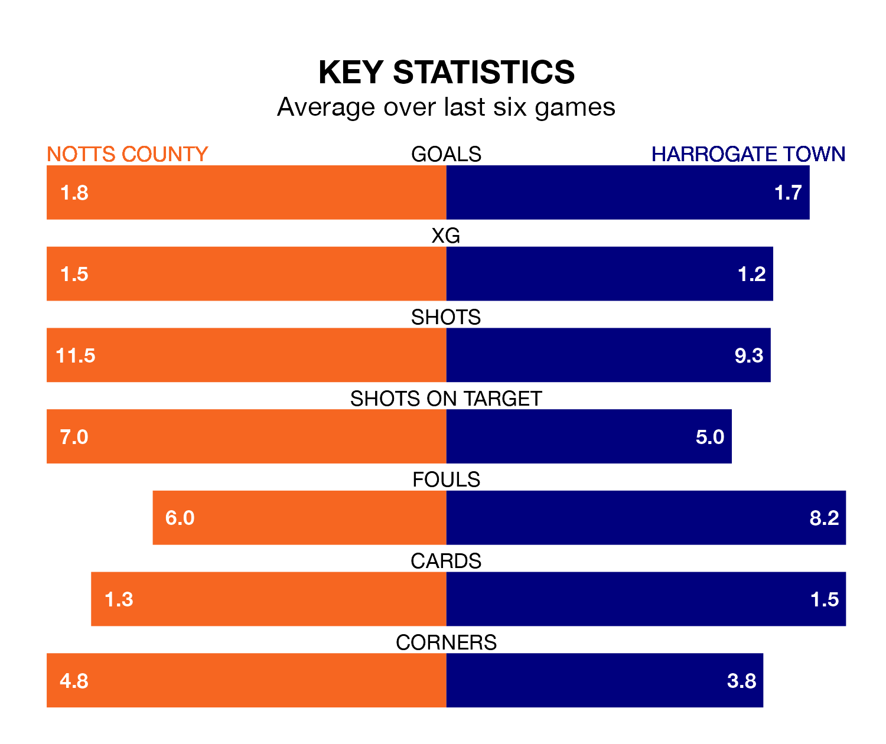

Notts County are heavy favourites to keep all three points at home in Saturday's kick-off against Harrogate Town.
County, who sit 16th in EFL League Two with 41 games played, are priced at 1.6 to seal victory at Meadow Lane.
Despite sitting four places and six points ahead of them in the table, Harrogate are 4.5 to win with *Betting Company*, while the draw is at 4.5.
With 80 goals in 41 games so far this season, County are the league's highest scorers with 2.0 goals per game. But they are conceding more than average too, letting in 79 goals at a rate of 1.9 per game.
Harrogate, meanwhile, are below average scorers, with 1.3 goals per game, compared to a league average of 1.5. They have conceded 1.4 goals per game.
In Macaulay Langstaff, the home team have the league's sharpest shooter so far this season. He has notched 24 goals in 41 appearances.
His goal rate of one every 150 minutes is quicker than that of George Thomson, Town's top scorer with a goal every 259 minutes, and a total of 12 goals in 38 games.
County are in disappointing form in EFL League Two, with one win and two draws from their last six games.
With two wins and three draws over that period, the visitors' form is better – they have taken nine points from 18, compared to County's five.
In the last five years, County and Harrogate have played each other on four occasions. County won one of them and Harrogate the other.
On average, County scored 1.0 goal and Harrogate 1.8 in those matches.
Their last meeting was on December 16, when Harrogate won 3-1 at home.
County's last match was on Monday, a 3-3 draw against Milton Keynes Dons, with Aaron Evans Nemane, Alassana Jatta and Samuel Joseph Austin getting the goals for County.
Harrogate beat Gillingham 5-1 last time out, also on Monday, with Matty Daly (two), Abraham Odoh, Anthony O'Connor and Jack Muldoon on the scoresheet.
Saturday's match will be refereed by Jacob Miles, who has taken charge of eight EFL League Two games so far this season, issuing no red cards and booking 32 players. He has not awarded any penalties.
The last Harrogate game Miles refereed was the 2-1 win away at Sutton United on January 30. He is yet to oversee a match featuring County this season.
Updated: 16:41 (UTC), 04/04/24